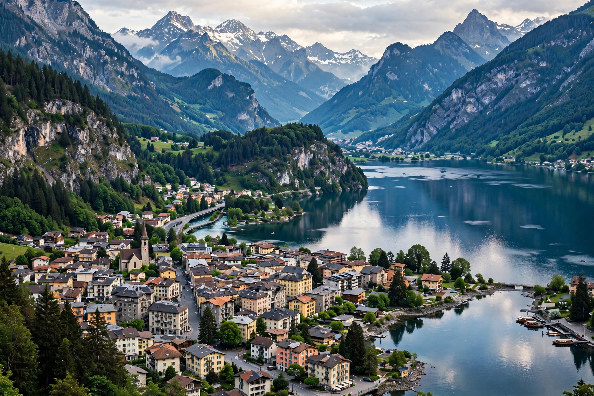
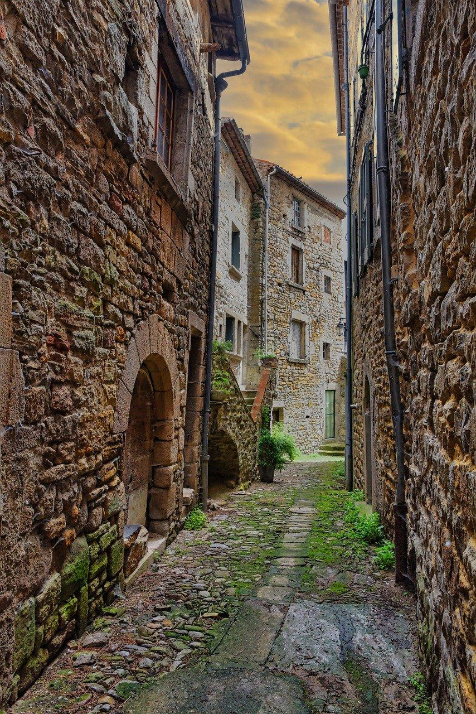
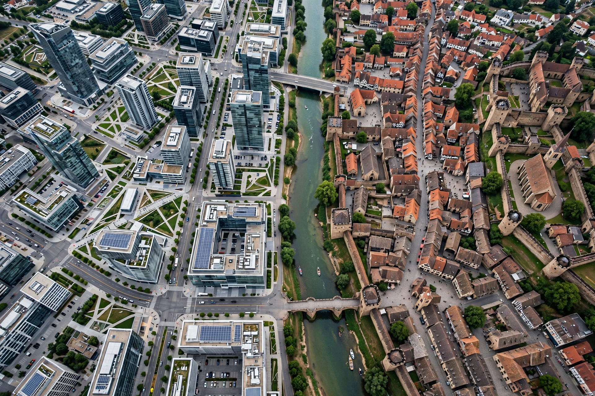

Datos Generales :

Ciudad: Valdoria
Pais: Republica de Arkenia
Poblacion: 1,8 Millones de habitantes
Ubicacion: En un valle rodeado de montañas, junto a un enorme lago.
Clima: Templado, con inviernos frios y veranos calidos.
Caracteristicas :
🏙️ Centro: Rascacielos modernos mezclados con edificios antiguos de piedra.
🌊 Lago Esmeralda: Atraviesa la ciudad y tiene un paseo costero enorme.
🚇 Transporte: Metro subterráneo y una red de tranvías eléctricos.
🌳 Parque de los Cedros: Un parque gigantesco en el centro, casi del tamaño de varios barrios.
🏰 Castillo de Valdoria: Antigua fortaleza situada sobre una colina, actualmente convertida en museo.
⚽ Estadio Aurora: Capacidad para 65.000 personas y sede del principal equipo de la ciudad, el Valdoria FC.
Barrios principales:


Valdoria se organiza en varios barrios, cada uno con su propia identidad: el histórico Centro Viejo, el moderno Distrito Aurora, el turístico Puerto Azul, el residencial Las Colinas y el artístico Barrio Ferroviario.
Conocé la historia completa de cada barrio en la sección Ciudad.
Lugares y actividades destacadas:
Descubrí el Castillo de Valdoria, la Torre Aurora, el Parque de los Cedros y el Estadio Aurora en la sección Lugares.